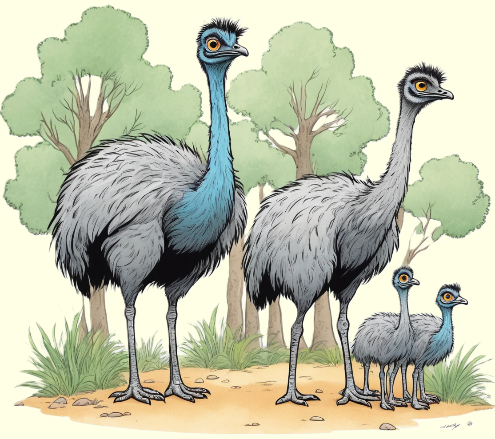

Der Emu, ein flugunfähiger Laufvogel, begeistert mit seinem weichen Federkleid und seinem schnellen Laufvermögen.
Entdecke die einzigartige Welt dieses Vogels und erfahre, wie er in den weiten Landschaften Australiens lebt.

Flugunfähige Riesen des Outbacks
Der Emu ist ein faszinierender Vogel, der in Australien beheimatet ist. Er ist bekannt für seine imposante Größe und die Unfähigkeit zu fliegen. Obwohl er flugunfähig ist, ist der Emu ein ausgezeichneter Läufer und kann erstaunlich hohe Geschwindigkeiten erreichen. Seine langen Beine und der kräftige Körper machen ihn zu einem perfekten Läufer in den weiten Landschaften des australischen Outbacks.
Emus haben einen auffälligen nackten Kopf mit blauen Hautfalten, die bei Aufregung leuchten. Sie haben auch starke Beine, die mit drei Zehen ausgestattet sind, von denen jeder mit einer scharfen Kralle endet. Diese Krallen helfen dem Emu nicht nur beim Laufen, sondern auch beim Verteidigen vor möglichen Bedrohungen.
Gesellige Laufvögel in der Wildnis
Obwohl Emus oft als Einzelgänger betrachtet werden, haben sie in Wirklichkeit ein soziales Leben. Besonders während der Paarungszeit versammeln sich mehrere Emus zu kleinen Gruppen. Die Männchen sind für das Brüten der Eier verantwortlich und kümmern sich liebevoll um die Küken, sobald sie geschlüpft sind.
Emus sind auch für ihre ungewöhnlichen Rufe bekannt, die wie Trompeten klingen können. Diese Rufe dienen dazu, andere Emus anzulocken oder territoriale Ansprüche geltend zu machen. Die geselligen und kommunikativen Eigenschaften der Emus machen sie zu faszinierenden Vögeln, die nicht nur durch ihre Größe, sondern auch durch ihr interessantes Verhalten beeindrucken können.